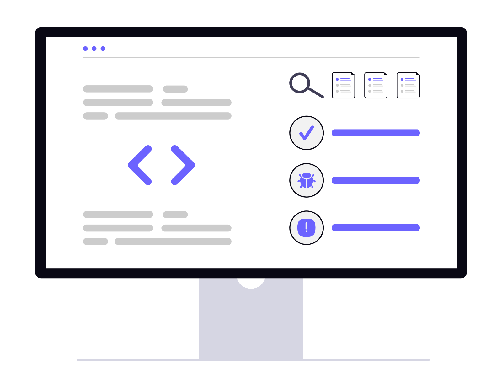
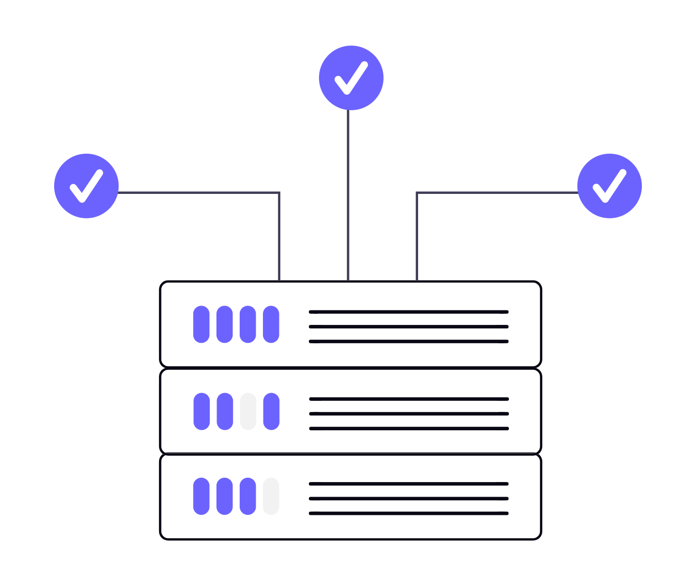

Code Reviewing.
Code reviews are an essential practice in modern software development, ensuring that code is not only functional but also maintainable, secure, and aligned with team standards. A code review typically involves one or more developers examining a peer’s changes before they are merged into the main codebase. This process helps catch bugs early, enforce coding conventions, and encourage knowledge sharing across the team. By having fresh eyes look at the code, issues like inefficient algorithms, unclear naming, or potential security flaws can be identified and addressed before they reach production.
Beyond improving code quality, code reviews foster collaboration and team growth. Junior developers can learn best practices from experienced teammates, while senior developers gain insight into different approaches or fresh perspectives. Tools such as GitHub pull requests, GitLab merge requests, and dedicated review platforms make the process efficient, enabling inline comments, discussions, and iterative improvements. When done thoughtfully, code reviews not only raise the technical bar but also build a culture of shared ownership, continuous improvement, and mutual respect within development teams.
Web Servers, What are they?
Web servers are the backbone of the internet, responsible for delivering content and handling requests from clients (usually web browsers). At their simplest, a web server listens for HTTP(S) requests, retrieves the requested files or generates responses dynamically, and returns those responses to the client. There are many server implementations—from lightweight static-file servers to full-featured platforms like Apache and Nginx—each optimized for different workloads. Modern web servers also handle important concerns such as TLS encryption, virtual hosts, request routing, and efficient delivery of static assets.
Beyond basic request/response handling, web servers are tightly integrated into the deployment and performance stack. They often work with application servers or server-side runtimes (for example, Node.js, Python WSGI, or PHP-FPM) to run dynamic applications, and techniques like reverse-proxying, load balancing, caching, and compression are used to scale and speed delivery. Security and reliability are critical: proper configuration, automatic certificate management, logging, and monitoring help protect services and ensure uptime. Together with CDNs, containerization, and orchestration tools, modern web servers enable developers to deploy fast, secure, and resilient web applications to users worldwide.